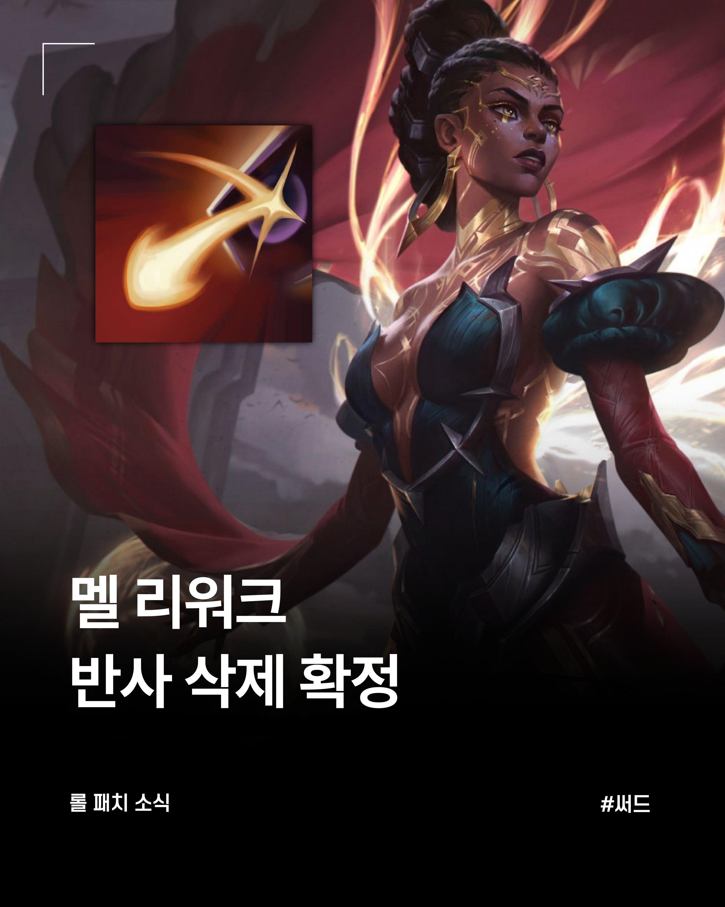

무지개 반사 삭제

무지개 반사 삭제
저 병신같은 스킬 가치가 너무 높으니까 밸런스 조절하기 개좆같아짐 ㅋㅋㅋ
반사가 문제가 아니라
나는 논타겟 스킬을 상대방 예측해서 던져서 맞추는건데
멜은 상대방 논타겟스킬이 날라온 방향이 아니라
시전자한테 고정타겟이 되서 날라가니까 불함리한거지 ㅋㅋㅋㅋ
고정타겟이였음?? 그냥 시전자위치로 반사하는거아닌가
스킬 사용할때 선후딜이 있어서 대부분 맞는거고
이러면 쓸 이유가 없잖아
반사가 본체인데
근데 W 가지고 있는 것만 해도 한타 억제력이나 궁극기 봉인시키는게 좀 있었지
가령 케틀 궁은 케틀이 걍 나 때려 수준이었음ㅋㅋ
설계를 잘못한거지 병신들
무지개 반사 같은 노리스크 하이리턴으로 게임 밸런스 박살내는 요소는 애초에 도입 안했어야지
멜젓에 삼겹살한조각 푸우욱찍어다한입 묵으면 크아
W를 이동하면서 정신집중/ 그동안 받은거 모아서 자기가 논 타겟팅해서 흡수한 피해만큼 올라가는 투사체 발사
이정도로 하지 잭스반격마냥
거의 그렇게바뀜
ㅈ이엇아
무지개반사는 진짜 ㅈ같은 스킬이 맞음 궁극기면 모를까
평타포함한 투사체 전체를 막아버리니까
무적만 해도 ㅈ같은데 무적인데 지속시간동안 무제한 반사 ㅋㅋㅋ
w는 저점을 보장받는 버프인데
qe 너프가 개나락가서 못쓰겠네
이러면 멜이 서폿으로 가고 투사체 던지는 암살자들 비명지를거같은디. 막는 범위가 꽤 크네
포킹조합 개카운터일듯 ㅋㅋㅋ한타때 저지랄하면 ㅋㅋㅋㅋ
사미라가 됐네
처음부터 다른 스킬로 냈어야지 이럴걸 몰랐냐고 ㅋㅋ
지들이 만들고 밸런스조절 불가능해서 기본스펙 씹창낸다음에 스킬삭제하는게 뭔짓임
레나타,세라핀할때 멜 보이면 한숨부터 나옴
야스오 장막이나 멜 반사나 이게 스킬도 일반스킬이랑 궁극기가 있는데 일반스킬 막히는건 그렇다쳐도 궁극기 막히는건 ㅈ같음 스킬급이 다른데 일반으로 쳐막아?
서폿댐?
원래 서폿으로 출시되었다는 사실~
롤 자주는 안하는대 저거 만나면 개초딩 기술이라 개 짜증나긴 했음
아니 개재밌었는데 왜 ㅋㅋㅋㅋ
그 이유는 팔다리 자 자르고 회생 불가능할 정도로 죽여놔서 그런 거임
출시하고나서 그냥 스킬 셋 자체와 딜이 좋아서 상위권이었음